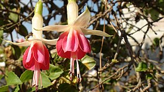

Про цветочки и не только!
Телефон: 89169996768
Почта: nimi9992@mail.ru

Всё, что вы хотели знать,
но боялись спросить,
про домашние растения!
но боялись спросить,
про домашние растения!
Про цветочки и не только!
Телефон: 89169996768
Почта: nimi9992@mail.ru
Фуксия
Описание
Деревце или кустарник, с гибкими ветвями, покрытыми небольшими зелёными или слегка красноватыми листьями. Листья супротивные овально-ланцетной формы, 4-5 см длиной, заострённые на конце и слегка зубчатые по краю. Цветёт обильно и долго. Цветки фуксии бывают разной окраски, простые или махровые. Цветок состоит из двух частей: из венчиковидной яркой чашечки и трубчатого венчика с отогнутыми листьями. Лепестки короче, чем лопасти чашечки, тычинки более длинные, чем чашечка. После цветения образуется плод — съедобная ягода.
Особенности
Фуксии светолюбивы. Температура содержания
— умеренная или прохладная, при температуре выше 18—20 °C фуксия
может сбросить цветки и листья и даже погибнуть. Зимой
растения содержат при температуре 6—10° С. Полив летом обильный,
почва должна быть влажная, растение нужно периодически
опрыскивать. Зимой полив умеренный. Пересаживать фуксии
необходимо ежегодно весной. Почва — 3 части глинисто-дерновой
и 2 части торфяной земли с добавлением 1 части песка.
Повреждается тлёй, белокрылкой, паутинным клещом, серой гнилью
и ржавчиной.
Весной побеги обрезают на треть длины:
срезанные побеги используют на черенки. Можно выращивать
также из семян, но при этом способе нет гарантии сохранения
всех признаков материнского растения.